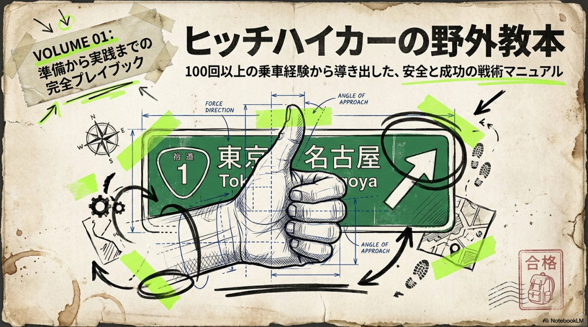

CORE
ヒッチハイク・レクチャー
初心者向けに、ヒッチハイクのコツを徹底解説。看板の書き方、立つ場所、笑顔の作り方、声のかけ方まで。先輩が実演しながら教える。一度教われば、もう怖くない。
- 看板の書き方／持ち方
- 立ち位置の選び方（高速IC / 道の駅 / 幹線道路）
- 第一声と引き際のテクニック
- 安全管理・ヤバい車の見分け方
新歓場所まで。合宿地まで。海まで、山まで、日本の果てまで。
集合地点は告げる。あとは、親指1本で来い。
私たちは、ヒッチハイクという
最も原始的で、最も自由な移動手段を
大学生活のど真ん中に据える。
お金もコネも要らない。
あるのは、笑顔と、親指と、ちょっとした度胸だけ。
それで日本中どこへでも行けることを、ここで知る。
サークルの活動は、基本的に「遠足」。
目的地を決めて、各自バラバラに、ヒッチハイクで集合する。
道中で出会う人、トラブル、笑い話。それが私たちのコンテンツ。


二つ名なぜか愛されて乗れる愛されモンスターの車捕獲
自称「親指の詩人」。全47都道府県を親指一本で踏破し、累計500台超のドライバーと心を交わしてきた、サークルの生ける伝説。「どこへ行くか」より「誰と出会うか」を信条に、今日もどこかの国道で笑顔の練習をしている。語り出したら止まらないが、その9割は車と恋の話——それでも不思議と人を惹きつけ、彼の助手席にはいつも誰かが座っている。— a man who lives for the thumb (and the girls).
人生で大事なものは、2つだけでいい。
ヒッチハイクと、女の子の笑顔だ。
冴えない高校時代を送った俺は、はじめて知らない車に乗せてもらったあの日、人生が変わった。 親指1本で、見ず知らずの誰かと心が通じる——こんなにロマンチックなこと、他にあるか？
正直に言う。最初の動機は「モテたい」、それだけだった。 でも気づけば俺は、全47都道府県・累計500台、ヒッチハイクに人生を捧げていた。
このサークルは、俺が道の上で見つけた“本物の自由”を、君と分かち合うための場所だ。
迷ってるなら、まず親指を立てろ。続きは、助手席で話そう。
VICE LEADER — 副代表

二つ名助手席の処刑人
代表ヒッチャーの右腕にして、サークルの「安定感」そのもの。狙いを定めた車は絶対に外さない精密なボード捌きと、相手の懐へすっと入る声かけで、乗車成功率はほぼ10割。新人が路上で固まっても、隣に山ちゃんが立つだけで、なぜか車が止まり始める。普段は物静かで多くを語らないが、いざ親指を立てれば誰よりも頼れる——そんな「静かな実力者」。— the closer of the open road.
EXECUTIVE — 幹部・幹事

二つ名百台喰らいの彗星
入って早々、わずかな期間でヒッチハイク100台を制覇した新進気鋭の新参者。— が、その実力はもう本物。地図を読む嗅覚と物怖じしない度胸で、ベテランも唸る難ルートを次々に攻略していく。幹事として遠征の段取り・集合場所・タイムスケジュールまで一手に引き受け、気づけばチームはいつも彼の手のひらの上。フットワークと愛嬌で、出会ったドライバーを一瞬でファンに変える——代表も副代表も認める“持ってる”男。
MEMBER — 団員

二つ名無自覚の停車神
意識してないのに、なぜか彼の前では車が止まる。本人いわく「気づいたら助手席にいた」。狙わない、力まない、それなのに乗車率は脅威の数字を叩き出す——理屈では説明できない「天然の引力」を持つ規格外の新人。くせ毛と人懐っこい笑顔につられて、ドライバーもつい窓を開けてしまうらしい。努力ゼロで結果だけが付いてくる、サークル随一の「持って生まれた」ヒッチハイカー。
APPRENTICE — 見習い人

二つ名伸びしろしかない未完の原石
右も左もまだ分からない、サークル期待の見習い。先輩たちのヒッチハイク武勇伝を浴びるように聞いて育つ、最年少（メンタル）枠。眠そうに見えて、いざ路上に立つと謎の愛嬌でなぜか車を呼び込む素質アリ。タオルが手放せないのはご愛嬌——伸びしろは、たぶんこの中で一番デカい。
これが、近畿大学ヒッチハイクサークルの新歓ルール。
そして、活動ルール。
大阪？京都？兵庫？告げる集合地点は毎回違う。電車もバスも使うな。
親指を立てて来た瞬間、君はもう仲間だ。
遠足も、合宿も、飲み会も。
「現地集合」、それだけ。
どうやって来るかは、君次第。
来れなかった人を責めない。
来れた人を、思いっきり讃える。
それが我々の流儀。
移動手段が、ちょっとだけ常識外れ。それ以外は、ただの楽しい大学生サークル。
初心者向けに、ヒッチハイクのコツを徹底解説。看板の書き方、立つ場所、笑顔の作り方、声のかけ方まで。先輩が実演しながら教える。一度教われば、もう怖くない。
朝、集合地点だけ発表。各自バラバラに、親指1本で目的地へ集合。先に着いた人から、写真と乾杯。最後に来た人が、その日の主役。
春・夏に1回ずつ。集合地点は遠ければ遠いほど面白い。北海道、九州、四国、なんでもアリ。各自2〜3日かけて、ヒッチハイクで集合する。
月1で開催。みんなで集まって、ヒッチハイクで出会った人、笑った話、ヤバかった話を語る夜。サークルの一番の楽しみ、と言うメンバーも多い。
ヒッチハイクの成約率は、統計的に女性のほうが高い。
だから、女子大生が一番のびのびと楽しめるサークル、
それがヒッチハイク部。
もちろん、男子も大歓迎。
むしろ「親指1本で車を止める」を本気で極めたい男子こそ来てほしい。
ここで身につく交渉力・コミュニケーション力は、
社会に出てから一生もの。
ヒッチハイクに必要なのは性別じゃない。
「人として、車に乗せたくなるかどうか」。それだけ。
その日の朝、グループLINEで一斉送信。「今日は香川県・善通寺駅、15時集合」みたいなノリで届く。
最寄りのIC、幹線道路、道の駅へ。看板を書いて、親指を立てる。1人で行く人もいれば、2〜3人で組む人も。
トラックの運転手、地元のおじいちゃん、出張帰りのサラリーマン、たまに芸能人。乗せてもらった車の数だけ、物語が増える。
集合地点で再会。先に着いた人は、ご当地グルメ偵察を済ませている。最後の到着者を全員で出迎える。
その日の最強エピソードを発表しあう。「一番ヤバかった車」「一番優しかったドライバー」を全員で投票。
帰りもヒッチハイクで帰る猛者もいれば、素直に終電を使う人もいる。それは、自由。

『ヒッチハイカーの野外教本 VOL.01』― 100回以上の乗車経験から導き出した、安全と成功の戦術マニュアル。準備から実践まで、これを読めば今日から始められます。
無料公開中・約20MB（Wi-Fi推奨）。スマホでもそのまま読めます。新歓前の予習にどうぞ。
テキストより“動き”で掴みたい人へ。約10分で、ヒッチハイクのコツと現場の空気感がまるごと分かる解説動画です。
▶ YouTubeで開く（9:44）この画面でそのまま再生できます。ボタンを押すとYouTubeに切り替わり、フルサイズ・高画質でも視聴できます。
新歓のとき、東大阪から和歌山の白浜まで来いって言われて、ガチで諦めかけた。けど6時間かけて着いた瞬間、人生で一番拍手された。たぶん一生忘れない。
女子1人でヒッチハイクは怖い、と思ってたけど、サークルでルールと安全管理を学んでから行くと全然違う。今では1人で四国まで行けるようになった。
就活の面接で「学生時代に頑張ったこと」を聞かれて、ヒッチハイクの話したらめちゃくちゃ食いつかれた。コミュ力鍛えるなら、これ以上のサークルない。
合宿で別府まで行ったとき、最初に乗せてくれた家族と仲良くなりすぎて、その家に泊めてもらった。今でも年賀状のやり取りしてる。これがヒッチハイク。
まずは公式インスタをフォロー。
気になったら DMで「新歓いきたい」 とひとこと送るだけ。
近大生はもちろん、他大学・社会人（インカレ歓迎）も大歓迎。
※ いまの団員は18名。学年も学部もバラバラ、みんな最初は初心者。気軽にDMしてOK。
DMでの質問・相談、いつでも歓迎。
「迷ってる」って一言だけでもOK。
はい、ダメです。これが我々のたった一つのルールです。でも安心してください、ヒッチハイクは思っているより成功します。先輩がコツを事前にDMでレクチャーします。
正直に言うと、ゼロリスクではありません。だからこそ、サークルでは「乗らない車の見分け方」「複数人で動く原則」「現在地共有アプリの使い方」など、安全管理を最初に徹底的に教えます。1人で挑戦するより、ずっと安全です。
大歓迎です。実際にメンバーの約6割は女子です。新歓も、はじめての遠足も、必ず先輩がペアで動きます。「1人で始めるのが不安」な人にこそ、ぜひ来てほしい。
運動神経はゼロでOK。コミュ力も、ここで鍛えられます。むしろ「人見知りだけど、自分を変えたい」というメンバーが一番伸びます。
はい、インカレサークルとして他大学・社会人の方も歓迎しています。InstagramのDMで「○○大学です」「社会人です」とひとこと送ってください。合同企画やオープン遠足も随時開催しています。
移動費はゼロ円（ヒッチハイクなので）。かかるのは、現地での食事代・宿泊代くらい。一般的なサークルの1/3以下のコストで遊べます。
ヒッチハイクが上手い人は、知らない人に笑顔で話しかけられる人。短時間で信頼を勝ち取れる人。状況を読んで行動できる人。…つまり、社会に出てから一番強い人。だから「すべてを制する」のです。